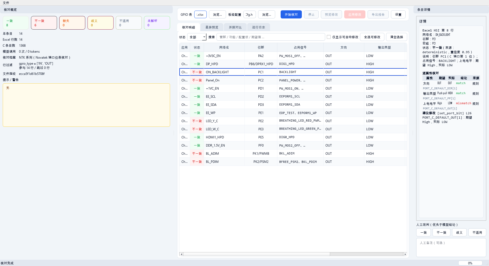
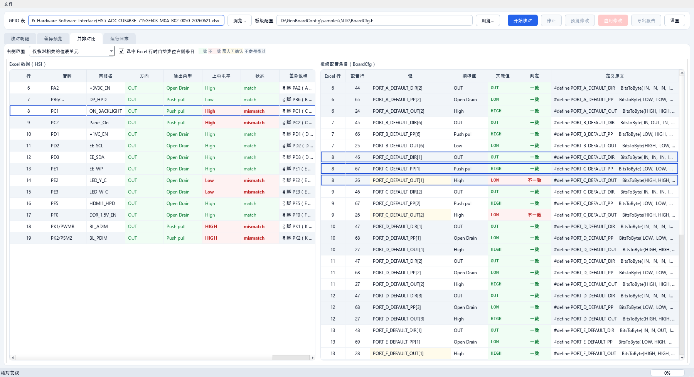
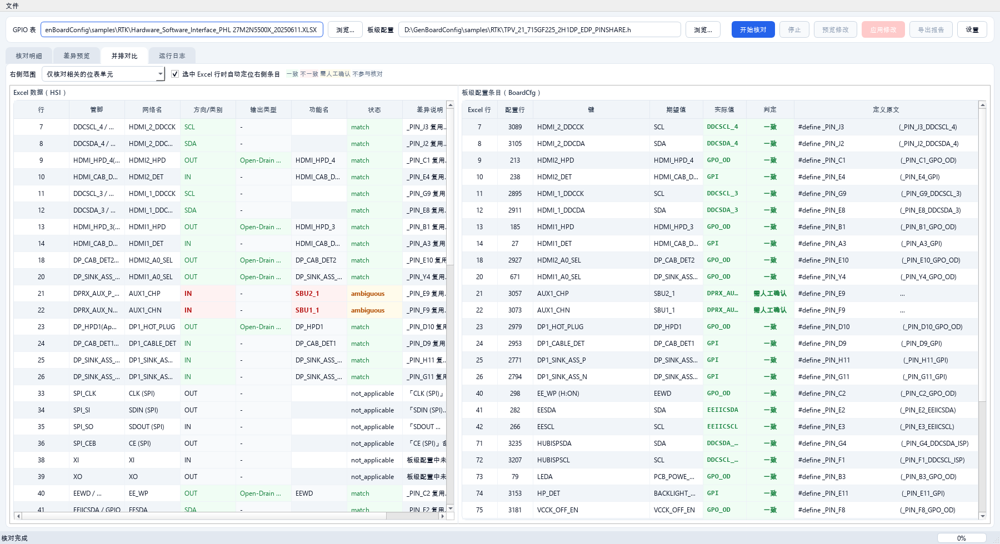
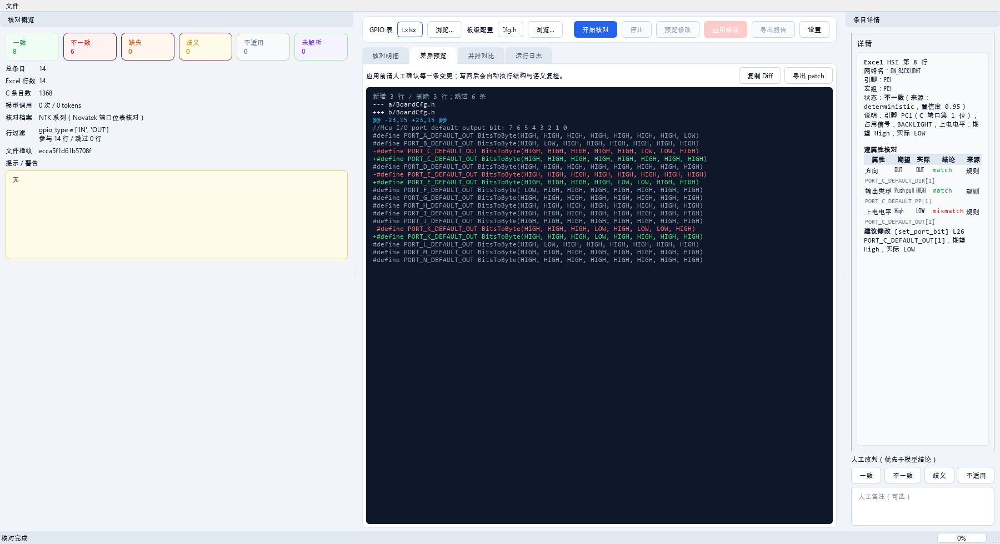
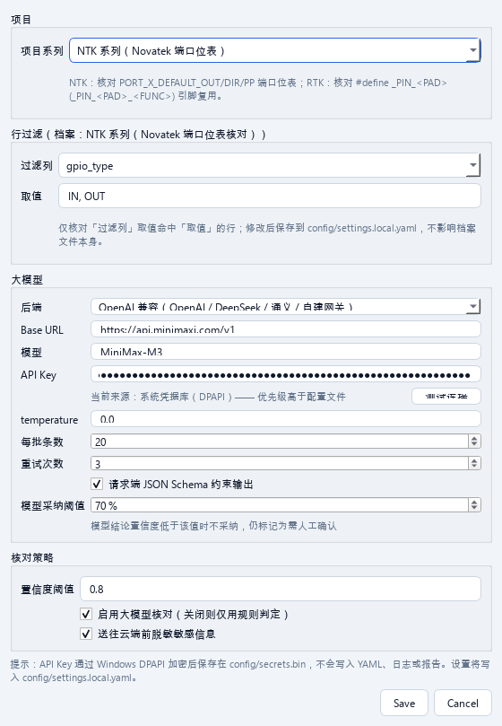

GenBoardConfig 使用 SOP
按 GPIO 分配 Excel 核对并修正板级配置文件（.c / .h）的 Windows 桌面工具 · 标准操作规程
0工具与适用范围
0.1 适用场景
把硬件工程师提供的 GPIO 分配 Excel（HSI 表） 与固件里的 板级配置文件 自动比对，找出「Excel 期望」与「代码实际」不一致的地方，确认后再由确定性代码安全写回。
*.xlsx / *.XLSX）*.c / *.h）0.2 工作原理（图示）
1环境准备与启动
1.1 方式 A：一键脚本（推荐）
在项目根目录双击 run_gui.bat。脚本会自动创建 .venv、安装依赖并启动 GUI，不依赖 activate，因此不受 PowerShell 执行策略限制。
:: run_gui.bat 内部流程
[1/3] 创建虚拟环境 .venv
[2/3] pip install -r requirements.txt
[3/3] PYTHONPATH=src → python -m genboardconfig1.2 方式 B：直接调用虚拟环境里的 Python
# 首次安装
.venv\Scripts\python.exe -m pip install -r requirements.txt
.venv\Scripts\python.exe -m pip install -e ".[dev]" # 可选：提供 genboardconfig 命令与 pytest
# 启动 GUI
$env:PYTHONPATH="src"
.venv\Scripts\python.exe -m genboardconfig
# 或者（已执行 pip install -e . 后）
.venv\Scripts\genboardconfig.exe使用清华镜像加速下载
在虚拟环境根目录放置 .venv\pip.ini，之后所有 pip 操作（含 run_gui.bat 内部的安装）自动走清华源：
[global]
index-url = https://pypi.tuna.tsinghua.edu.cn/simple
trusted-host = pypi.tuna.tsinghua.edu.cn
timeout = 120
retries = 51.3 安装自检
.venv\Scripts\python.exe -m pytest tests -q
# 期望输出：51 passed
.venv\Scripts\python.exe tools\smoke_real.py
# 期望输出：真实样例端到端（在副本上做写回，不动原文件）目录结构速查
2界面分区总览
主窗口为三栏布局：左侧「核对概览」、中部四个标签页、右侧「条目详情」，顶部为工具条、底部为状态栏。

1 2 3 4 5 6 72.1 分区速查表
| 区域 | 控件 | 说明 |
|---|---|---|
| 顶部工具条 | GPIO 表 / 板级配置 | 两个只读路径框 +「浏览…」；两个都选好后「开始核对」才可点 |
| 开始核对 | 主按钮（Ctrl+R）；执行期间禁用，右侧「停止」可用 | |
| 停止 | 中断正在进行的核对 | |
| 预览修改 | 按已勾选行生成 unified diff，自动跳到「差异预览」页签 | |
| 应用修改 | 红色危险按钮；先备份再写回，失败自动回滚 | |
| 导出报告 | （Ctrl+E）导出 HTML 报告 + 同名 CSV | |
| 设置 | （Ctrl+,）项目系列 / 行过滤 / 大模型 / 核对策略 | |
| 核对概览 （左） | 6 张状态卡 | 一致 / 不一致 / 缺失 / 歧义 / 不适用 / 未解析；点击即筛选，再点取消 |
| 统计信息 | 总条目、Excel 行数、C 条目数、模型调用（次数 / tokens / 失败数） | |
| 核对档案 / 行过滤 | 显示命中的档案、实际使用的过滤列与取值、参与/跳过行数 | |
| 文件指纹 / 提示警告 | 板级配置文件的 SHA 前 16 位；黄色区显示回退提示与模型错误 | |
| 中部页签 | 核对明细 | 主表：应用 | 状态 | 网络名 | 引脚 | 占用信号 | 方向 | 输出类型 | 上电电平 | 说明 选中行用蓝色粗边框标示，不会盖住状态列的红/绿底色 |
| 差异预览 | 彩色 unified diff；支持「复制 Diff」「导出 patch」 | |
| 并排对比 | 左 Excel ↔ 右板级配置，双向联动；切到本页签自动隐藏左右侧栏 | |
| 运行日志 | 全过程日志 + 模型交互记录（请求 / 响应 / 错误） | |
| 条目详情 （右） | 详情区 | Excel 行号、网络名、引脚、状态与来源、逐属性核对表、定义原文、建议修改 |
| 人工改判 | 「一致 / 不一致 / 歧义 / 不适用」四个按钮 + 备注框，优先级高于模型结论；也可右键表格改判 | |
| 状态栏 | 进度条 | 实时阶段提示与百分比；核对中显示当前阶段 |
2.2 快捷键
| 快捷键 | 功能 |
|---|---|
Ctrl + R | 开始核对 |
Ctrl + E | 导出核对报告 |
Ctrl + , | 打开设置对话框 |
| 表格右键 | 标记为一致 / 不一致 / 歧义 / 不适用、复制当前行 |
3标准操作流程
选择文件
- GPIO 表：点「浏览…」选择 GPIO 分配 Excel（
*.xlsx/*.XLSX）。工具会自动定位HSI工作表并探测表头。 - 板级配置：点「浏览…」选择板级配置文件（
*.c或*.h），通常是BoardCfg.h（NTK）或*PINSHARE.h（RTK）。 - 选择完成后立即自动识别核对档案：按「设置 → 项目系列」或板级配置文件的特征（
detect_series）判定为 NTK / RTK，并写入左下角「核对档案」。
GPIO TYPE 列，可在「设置 → 行过滤」把过滤列改为 chip_section、取值填 OUTPUT, INPUT。工具也内置了自动回退：主列无匹配行时自动改用备用列，并在左下角标注「（回退）」。
开始核对
点顶部 「开始核对」（或 Ctrl+R）。核对在后台线程执行，界面不会卡死。
- 进度条显示当前阶段；核对期间「停止」可用。
- 「运行日志」页签会记录：
=== 开始核对 ===、模型后端与是否启用大模型、逐条模型交互、最终统计。 - 若启用了大模型，左侧「模型调用」显示
次数 / tokens / 失败数；失败会在黄色警告区与日志中同时标红。
审阅结果
核对完成后从三个角度审阅：
- 概览（左）：点状态卡筛出「不一致」「歧义」等；确认「行过滤」显示的是你期望的列与取值。
- 明细（中）：属性列显示
期望 → 实际，不一致的期望值标红。 - 详情（右）：选中任一行，查看逐属性核对表（属性 / 期望 / 实际 / 结论 / 来源）与定义原文（宏名 + 行号 + 原文片段）。
并排对比页签适合逐引脚确认：左表是 Excel 数据，右表是板级配置条目，两边按 Excel 行分组一一对应，选中一侧另一侧自动联动滚动。

1 2 3 4 5
1 2SBU2_1 / SBU1_1 两行判定为需人工确认（歧义），因 Excel 的功能名与 .h 中的复用功能名不一致，需交由大模型或人工判定等效性。人工改判
对模型或规则给出的结论不认可时：选中行 → 在右侧点「一致 / 不一致 / 歧义 / 不适用」，或填备注。人工结论优先级高于模型，状态卡计数会即时重算。
勾选要修改的行
- 在「核对明细」表最左侧的「应用」列勾选要处理的行。
- 点 「全选可修改」 可一次勾选全部可自动改写的行；「清空选择」 取消全部。
- 辅助筛选：状态下拉（按结论过滤）、搜索框（管脚 / 功能 / 配置项 / 期望值）、勾选「仅显示可自动修改」。
预览修改
点 「预览修改」。界面自动切到「差异预览」页签，显示彩色 unified diff，顶部给出统计：
新增 3 行 / 删除 3 行 · 跳过 6 条- 绿色
+= 改写后的行，红色-= 改写前的行。 - 「跳过 N 条」= 这些行不能自动改（无法唯一定位、落点冲突、期望值冲突等），需人工在
.h里直接改；跳过原因会写进「运行日志」。 - 可「复制 Diff」到剪贴板，或「导出 patch」为
*.patch文件供评审。

1 2 3PORT_C_DEFAULT_OUT 的 bit1 由 LOW 改为 HIGH（对应 Excel PC1 行「Power On = High」）；② PORT_E_DEFAULT_OUT；③ PORT_K_DEFAULT_OUT。整行只替换 BitsToByte(...) 中的一个实参，排版不变。应用修改
点 「应用修改」，弹出确认框显示目标文件路径与将写入的处数。确认后依次执行：
导出报告
点 「导出报告」（Ctrl+E）选择保存位置（默认 <板级配置目录>\.genboard\report.html）。工具会同时生成：
report.html—— 完整核对报告（含结论、证据、差异、统计），可直接在浏览器打开或作为附件归档。report.csv—— 同名表格，便于导入 Excel 继续分析。
4状态判定与图例
4.1 六种结论
| 状态 | 内部值 | 颜色 | 含义与处理 |
|---|---|---|---|
| 一致 | match | 绿 | Excel 期望与板级配置实际相同，无需处理 |
| 不一致 | mismatch | 红 | 两者不同，可勾选并写回（唯一能定位落点时） |
| 缺失 | missing | 橙 | Excel 有该引脚，但板级配置里找不到对应定义 |
| 歧义 | ambiguous | 黄 | 判定不清，需人工确认；模型置信度低于阈值时也归此类 |
| 不适用 | not_applicable | 灰 | 该行不参与核对（模板占位符、噪声项、Excel 标 NA 等） |
| 未解析 | unresolved | 紫 | 解析阶段未能得出结论，需人工介入 |
4.2 判定来源
每条结论都标注来源与置信度，在右侧详情面板可见：
| 来源 | 说明 |
|---|---|
| 规则 | 确定性规则判定（deterministic）—— 引脚来自 Excel、位表就是位表，绝大多数结论属此类 |
| 模型 | 大模型复核（llm）—— 仅用于规则判不清的残余项，并附带理由与置信度 |
| 人工 | 人工改判（human）—— 优先级最高，置信度记为 1.00 |
4.3 判定决策树
5NTK / RTK 规则差异
工具用「核对档案（profile）」描述不同芯片系列的核对口径，配置文件位于 config/profiles/。
| 对比项 | NTK（Novatek） | RTK（Realtek RL6829） |
|---|---|---|
| 核对对象 | 端口位表 PORT_X_DEFAULT_OUT / DIR / PP | 引脚复用区块 #define _PIN_C1 (_PIN_C1_GPO_OD) |
| 引脚来源 | Excel「PIN Name」列（芯片引脚） | Excel「PIN Name」列 |
| Excel 主过滤列 | gpio_type（G 列 GPIO TYPE），空时回退 chip_section | gpio_type（G 列），不回退，为空则不核对 |
| 参与核对属性 | 方向、输出类型、上电电平（3 项） | 方向/类别、输出类型（2 项） |
| 忽略项 | PORT_X_DEFAULT_PU（Excel 无对应列） | Power On / Saving / Off 三列（评审结论：默认正确） |
| 噪声处理 | — | FUNCTION$、(SPI)、KEY ADC、Headphone 等命中即跳过 |
| 缺失处理 | 判为「缺失」 | 不核对（missing_action: skip） |
| 功能名差异 | — | 交大模型判定等效（阈值 0.7） |
5.1 NTK：端口位表逐位展开
NTK 的核心是：Excel 的一行要落到某个端口的某一位上。
PORT_C_DEFAULT_OUT 的 bit1，实际为 LOW，判定不一致，写回时仅替换该位对应的实参。5.2 RTK：引脚复用五层判定
RTK 核的是「引脚被复用成了哪个功能、什么电气属性」，分五层逐层收敛。
6安全写回机制
写回是本工具唯一改动源文件的环节，因此设了多道闸门。
| 闸门 | 规则 |
|---|---|
| 白名单编辑 | 只允许改写：宏右值（set_macro）、结构体字段（set_struct_field）、数组元素（set_array_item）、端口位表单比特（set_port_bit）。其它类型一律跳过并记入日志。 |
| 落点唯一性 | 同一 (行号, 值列偏移) 被多条变更命中 → 视为落点冲突，后一条跳过。 |
| 原值校验 | 写入前重新读取原值；与核对时的原值不一致 → 说明文件已被他人改动，跳过该条。 |
| 冲突守卫 | NTK 档案 conflict_guard: true：同一 (端口, 位, 位表) 被多行要求且期望值互相冲突 → 禁止自动改写。 |
| 备份 + 复检 | 写回前备份到 .genboard/backup/；写回后执行结构校验与逐属性语义复检，任一失败自动回滚。 |
6.1 文件落点
| 产物 | 路径 |
|---|---|
| 工作区 | <板级配置文件所在目录>\.genboard\ |
| 备份文件 | .genboard\backup\YYYYmmdd_HHMMSS_<原文件名>.bak |
| 运行日志 | .genboard\logs\ |
| 导出报告 | 对话框指定位置，默认 .genboard\report.html 与同名 .csv |
| 本地设置 | config/settings.local.yaml（自动 gitignore） |
| API Key | config/secrets.bin（Windows DPAPI 加密，不入 YAML / 日志 / 报告） |
tools/smoke_real.py 就是「在副本上写回、不动原文件」的回归脚本。
7设置与模型接入
点工具条「设置」（Ctrl+,）。设置写入 config/settings.local.yaml，不修改 config/settings.yaml 与档案文件本身。

1 2 3 47.1 项目
| 项 | 说明 |
|---|---|
| 项目系列 | 自动检测（默认，按板级配置文件特征）/ NTK / RTK。选错会导致核对口径错误，建议保持自动。 |
| 行过滤 · 过滤列 | 只核对该列取值命中的行。NTK 默认 gpio_type；若目标表该列为空，改 chip_section。 |
| 行过滤 · 取值 | 逗号分隔，如 IN, OUT 或 OUTPUT, INPUT。 |
7.2 大模型
| 项 | 说明 |
|---|---|
| 后端 | 离线 Mock（默认，无需密钥，用于演示与回归）/ OpenAI 兼容（OpenAI、DeepSeek、通义、自建网关）/ Anthropic（预留） |
| Base URL / 模型 | 例如 https://api.openai.com/v1 + gpt-4o-mini |
| API Key | 输入后经 Windows DPAPI 加密保存到 config/secrets.bin，优先级高于 YAML 里的 llm.api_key |
| 测试连接 | 用当前参数发一次最小请求，立刻暴露地址/鉴权/模型名问题 |
| 每批条数 / 重试次数 | 默认 20 / 3；批量越大吞吐越高但单次失败影响面越大 |
| 请求端 JSON Schema | 勾选后由服务端约束模型输出格式，提升结构化解析成功率 |
| 模型采纳阈值 | 默认 70%；模型置信度低于该值 → 保持「歧义」，不生成修改 |
7.3 核对策略
| 项 | 说明 |
|---|---|
| 置信度阈值 | 默认 0.8；低于该值的规则结论降级为「歧义」 |
| 启用大模型核对 | 关闭则只用规则判定，完全离线，速度快且无隐私外发 |
| 脱敏敏感信息 | 送往云端前脱敏；建议保持开启 |
8常见问题排查
| 现象 | 原因与处理 |
|---|---|
| 「开始核对」按钮灰色不可点 | 必须同时选定「GPIO 表」和「板级配置」两个文件，缺一不可。 |
| 概览「行过滤」显示参与 0 行 | 主过滤列在目标表中为空。工具会自动回退到备用列并在左下角标注「（回退）」；若仍为 0 行，到「设置 → 行过滤」改过滤列与取值。 |
| 核对档案显示「通用模式」 | 未匹配到 NTK/RTK 档案。在「设置 → 项目系列」手动指定；确认板级配置文件选对了（RTK 应选 *PINSHARE.h）。 |
| 警告区出现「模型调用失败」 | 在「设置」里点「测试连接」逐项排查：Base URL 是否正确、API Key 是否有效/过期、模型名是否可用。离线演示可切回 离线 Mock。 |
| 预览提示「跳过 N 条」 | 这些行不能自动改写：无法唯一定位、落点冲突、原值已变或期望冲突。原因写在「运行日志」，需人工在 .h 中直接修改。 |
| 点「应用修改」后提示「已回滚」 | 结构校验或语义复检未通过，源文件已自动还原。看「运行日志」的 已修复 / 未消除 / 新增差异；备份在 .genboard\backup\，可手工比对。 |
| 「文件指纹」与核对时不一致 | 板级配置在核对后被其它工具改动。重新点「开始核对」再走一遍流程。 |
| PowerShell 提示「禁止运行脚本」 | 用 run_gui.bat（不受影响）；或 Set-ExecutionPolicy -Scope Process -ExecutionPolicy Bypass 仅放开当前会话。 |
命令行 python 指向 Microsoft Store |
当前终端 PATH 是安装前的旧值，重开一个终端即可；或直接用 .venv\Scripts\python.exe。 |
| 生成的截图里中文是方块 | 仅离屏截图工具的现象（Qt offscreen 默认不加载系统字体）。执行时设置 QT_QPA_FONTDIR=C:\Windows\Fonts；实际 GUI 界面正常显示中文。 |
| 核对很慢 | 关闭大模型可立即提速；或调小「每批条数」以外的手段 —— 优先检查是否核对了不必要的行（收紧行过滤）。 |
8.1 常用命令
:: 单元测试
.venv\Scripts\python.exe -m pytest tests -q
:: 真实样例端到端（在副本上做写回，不动原文件）
.venv\Scripts\python.exe tools\smoke_real.py
:: RTK 样例端到端
.venv\Scripts\python.exe tools\smoke_rtk.py
:: 离屏 GUI 冒烟
.venv\Scripts\python.exe tools\gui_smoke.py
:: 重新生成 SOP 截图（中文正常显示）
$env:QT_QPA_FONTDIR="C:\Windows\Fonts"
.venv\Scripts\python.exe tools\sop_screenshot.py9附录
9.1 相关文档
| 文档 | 内容 |
|---|---|
README.md | 项目总览、快速开始、目录结构 |
docs/requirements.md | 需求分析：目标、范围、功能与非功能需求、异常场景 |
docs/architecture.md | 架构设计：分层、流程、LLM 集成、ADR |
docs/comparison_rules.md | NTK 核对规则：端口位表口径、逐属性映射、实测结论 |
docs/comparison_rules_rtk.md | RTK 核对规则：五层判定、量化结果、待确认项 |
docs/SOP.html | 本文档：带图示的标准操作规程 |
9.2 核对档案速查
| 档案 | Excel 侧 | C 侧 | 关键配置 |
|---|---|---|---|
NTKconfig/profiles/ntk.yaml |
Sheet HSI；列：pin_name / net_name / gpio_type / io_type / power_on |
PORT_{port}_DEFAULT_{OUT|DIR|PP}，位序 desc（bit7 → bit0） |
row_filter.field: gpio_type，fallback: chip_section，conflict_guard: true |
RTKconfig/profiles/rtk.yaml |
Sheet HSI；列：pin_name / net_name / gpio_type / io_type |
_PIN_{PAD} (_PIN_{PAD}_{FUNC}) 复用区块 |
generic_gpio: GPI/GPO_PP/GPO_OD，missing_action: skip，llm_confidence_threshold: 0.7 |
9.3 NTK 逐属性映射（Excel 列 ↔ 板级配置宏）
| 板级配置宏 | Excel 列 | 属性 |
|---|---|---|
PORT_X_DEFAULT_DIR[bit] | G 列「GPIO TYPE(输入输出类别)」 | 方向 |
PORT_X_DEFAULT_PP[bit] | H 列「Output PIN 设定类型」 | 输出类型（1=推挽 0=开漏） |
PORT_X_DEFAULT_OUT[bit] | I 列「Power On」 | 上电电平 |
PORT_X_DEFAULT_PU | — | 暂时忽略（Excel 无对应列） |
9.4 建议归档内容
| 归档项 | 说明 |
|---|---|
| 核对报告 HTML / CSV | 结论 + 证据 + 差异 + 统计，用于评审与追溯 |
导出的 *.patch | 如需走代码评审流程，可用「差异预览 → 导出 patch」 |
| 运行日志 | 含模型交互记录，用于复核模型判定过程 |
写回备份 *.bak | 位于 .genboard\backup\，出现异常时用于手工还原 |